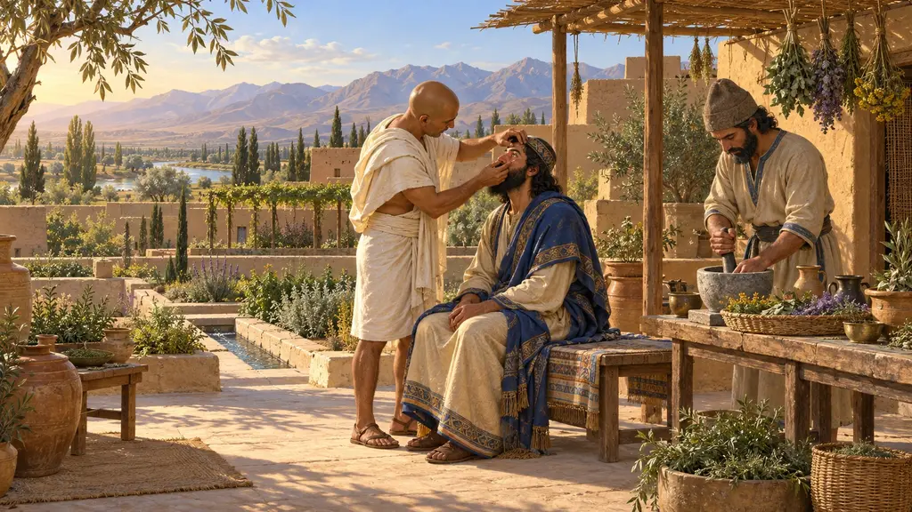
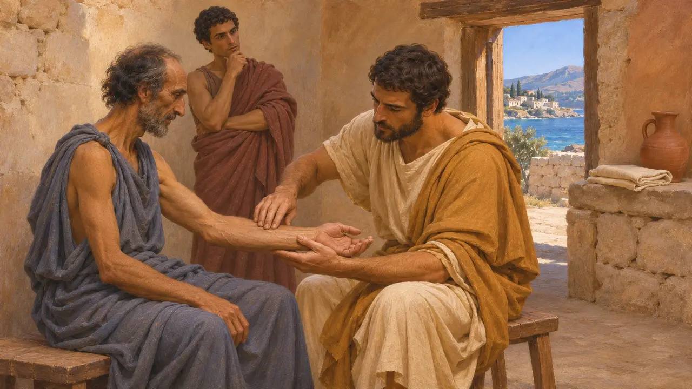
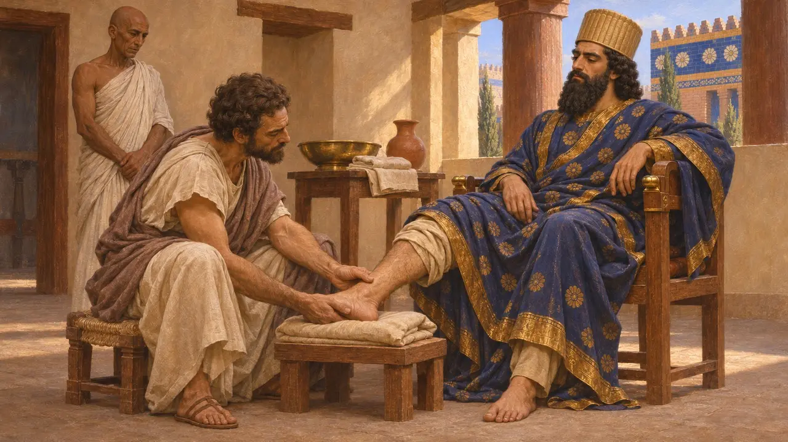
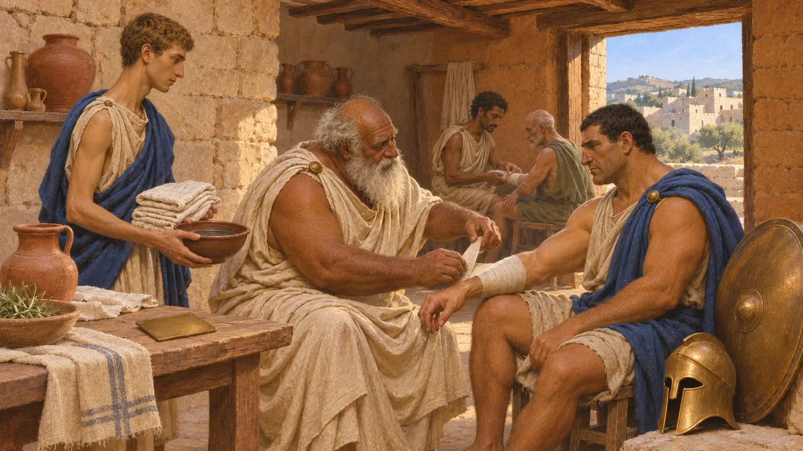
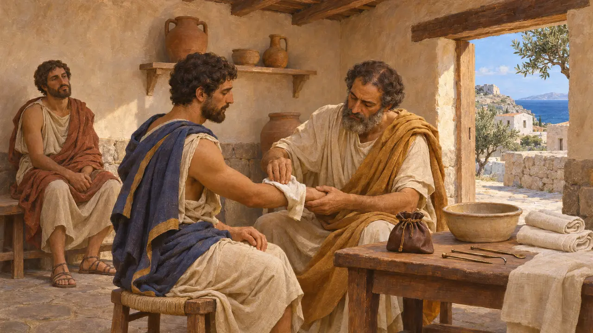
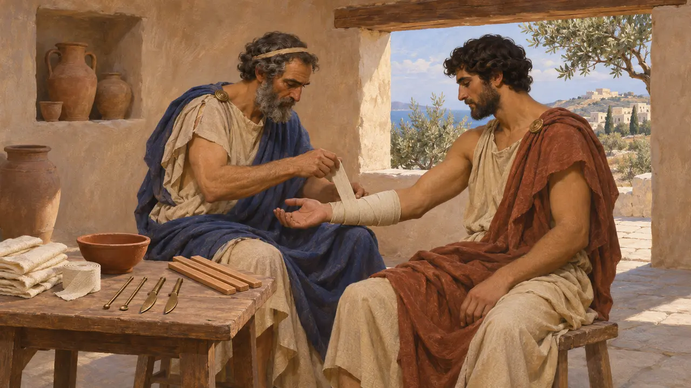

그리스 외과소
그리스 의사의 진료실, 그리스 세계, 기원전 520~479년경
그리스 외과소, 곧 이아트레이온은 의사가 환자를 진찰하고 뼈를 맞추며 상처를 싸매던 방이었다. 헤로도토스에 따르면 이 시기 일부 그리스 도시는 의사를 도시에 머물게 하려고 공공 재정에서 해마다 보수를 지급했다. 그리스 의사들은 페르시아 왕들을 섬기기도 했는데, 가장 유명한 이는 다리우스의 궁정에 있던 크로톤의 데모케데스다.
게임에서: 게임 속 도시가 지급하는 연간 보수는 데모케데스에 관한 헤로도토스의 기록을 따릅니다. 의사가 지나가는 곳의 병을 무엇이든 고친다는 것은 단순화한 것입니다. 그리스 의사들은 외과소나 환자의 집에서 치료했고, 고치지 못하는 병도 많았습니다.

데모케데스와 의사의 값
고대의 전승헤로도토스에 따르면 데모케데스는 크로톤을 떠나 아이기나에 정착했는데, 도구 하나 없이도 첫해에 이미 그곳의 기성 의사들을 능가했다. 이듬해 아이기나인은 공금 1탈란트를 주고 그를 고용했고, 3년째에는 아테네인이 100므나를, 4년째에는 사모스의 폴리크라테스가 2탈란트를 주었다. 헤로도토스는 당시 그리스인 가운데 크로톤의 의사들이 가장 뛰어나다고 여겨졌다고 덧붙인다.
Herodotus 3.131

페르시아 궁정의 그리스인 의사
고대의 전승기원전 522년경 사트라프 오로이테스가 폴리크라테스를 죽인 뒤, 데모케데스는 그의 수행원들 사이에서 붙잡혔다가 훗날 수사로 끌려왔다. 헤로도토스에 따르면 다리우스가 사냥 중 말에서 뛰어내리다 발목을 삐었는데, 이집트 의사들이 상태를 더 악화시켰고 데모케데스가 보다 부드러운 그리스식 치료로 그를 낫게 했다. 대왕은 그에게 후한 상을 내렸다. 데모케데스를 언급한 페르시아 문서는 없으므로, 이 이야기는 주로 헤로도토스에 의존한다.
Herodotus 3.125; 3.129-132

이달리온 서판
당대 기록키프로스 이달리온에서 나온 청동 서판은 키프로스 음절 문자로 쓰였으며, 아마도 기원전 5세기 전반의 것으로 한 의사와 맺은 계약을 기록하고 있다. 메디아인, 곧 페르시아인과 키티온인이 도시를 포위했을 때, 스타시키프로스 왕과 도시는 의사 오나실로스와 그 형제들을 고용해 부상자들을 무료로 치료하게 했다. 도시는 약속한 은 대신 그들에게 땅을 내주었다.
Idalion bronze tablet (ICS 217)

공공 보수로 얻은 것
분쟁 중헤로도토스는 아이기나가 그 1탈란트로 무엇을 기대했는지 말하지 않는다. L. 콘하프트는 이런 보수가 의사를 도시에 정착시키는 대가였으며, 의사는 그래도 환자에게 치료비를 받았다고 주장했다. 다른 역사가들은 일부 시민은 무료로 치료받았다고 본다. 공공 의사에 관한 증거는 대부분 기원전 4세기 이후의 비문에서 나오므로, 기원전 500년 무렵에 이런 제도가 얼마나 흔했는지는 확실하지 않다.
L. Cohn-Haft, The Public Physicians of Ancient Greece, 1956

외과소 안에서
고대의 전승히포크라테스 학파의 논고 『외과 진료실에 관하여』는 의사의 작업실을 묘사합니다. 좋은 채광, 바로 쓸 수 있는 기구, 붕대와 부목에 관한 세심한 규칙이 그것입니다. 다른 히포크라테스 저작들은 의사가 환자의 집으로 왕진하기도 했음을 보여 줍니다. 이 문헌들은 아마 기원전 5세기 후반이나 4세기에 쓰였을 것이므로, 게임의 레벨보다 다소 뒤의 의술을 묘사합니다.
Hippocratic Corpus, In the Surgery
출처
- Herodotus 3.125-137
- O. Masson, Les inscriptions chypriotes syllabiques, 1961 (ICS 217)
- L. Cohn-Haft, The Public Physicians of Ancient Greece, 1956
- Hippocratic Corpus, In the Surgery
- V. Nutton, Ancient Medicine, 2004
- J. Jouanna, Hippocrates, 1999